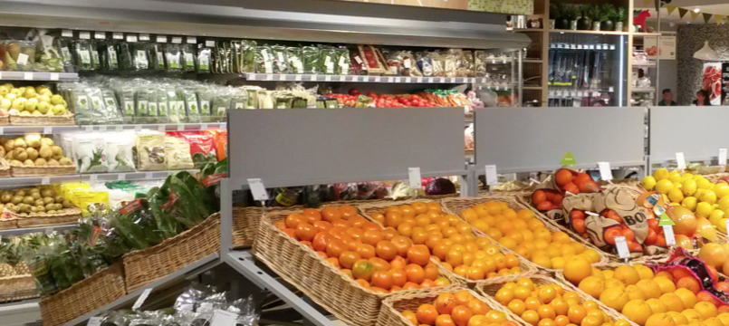

本集大嘴李的丹麦小札是由“爱上洋圈圈，生活美又鲜”的新浪著名美女编辑洋小圈给与独家支持为大家播报的。在我不在家的这段时间，洋小圈继续摇动着大旗，自强快乐地继续经营我们的幸福事业，她是欢乐的调味剂，也是我生命的必需品，我在异乡的这段生活也会学着和她一样，面朝大海，努力工作，不虚度不挥霍，胜利归还。最后，我必须有所表示，在此打个广告，支持洋圈圈的美食事业猛戳新浪浙江美食并关注，微信上的朋友可以搜索公众号“舌尖杭州”一飨纷华。
说到生活，就是四个字：吃喝玩乐……对不起，打错了，应该是吃穿住行！不管上头哪一种吧，吃是摆在战略性的第一位的。而说到吃，大嘴李这张嘴就是为这长的，我妈说大嘴吃四方，今天，我终于吃到资本主义这儿来了！对于某些在微信上除了炫吃就是炫玩的同志，我想说，我今天也扯一次淡，要用循序渐进、层次分明的方法来描述我每天的饮食情况。
按照分类方法来看（多半是看多了大学讲义）：可以按时间分：早饭中饭晚饭；按食材种类分：蔬菜类蛋白类糖类；按照消费行为分：外头吃自己做。这些看起来都是很有条理的，但是因为吃的实在太丰富，忧虑篇幅的长短，我只好拣重点讲：本着生活服务类博客栏目的宗旨，我来提供点有用的情报，各位看官且涨知识且看热闹。
16. WHERE 去哪找吃的？
这个问题是首要考虑的。由于住所锅铲齐备，自己补给是除了吃食堂吃饭店外的另一个选择。说到吃食堂，我还是很想念怡膳堂那些我曾经不够珍惜的小伙食，当然多半是我实在不够习惯，别看跟玫瑰简餐一样大家排个队上去自己挑完阿姨给你结账，那挑的东西真是天差地别，首先是几个乱炖的荤菜（吃了好几次没吃出来是什么肉），其次是主食（看到一次炒饭，几乎都是各类全麦面包），再次是一堆拌沙拉用的生蔬菜，最后就是各类乱挤的沙拉酱、番茄酱，大伙DIY的不亦乐乎，最后称斤两给你算钱（不管是肉还是菜，大概为8kr/100g，我大概每次要弄个400g）。说到这儿，还有个小插曲，听说AAU的一些食堂开始改革而废除斤两制度，因为他们发现越来越多学生只打肉不吃菜！少侠我哪吃得惯这玩意呀，爷我走了还不行嘛！到后第三天我就开始在住所的厨房续写大嘴传奇了。
至于外头，这花花绿绿的世界竟然容不下那么多好吃的食物，还有没有王法了呀！简直是清一色的披萨店，要不就是卖汉堡的。披萨也忍不住吐槽一下，上次和LIU师兄吃饭，我问披萨几寸，他说不大这儿都统一大小，我们都是一个人吃一个。上了菜简直是坑爹呀！12寸你一人吃一个？那天我费老大劲吃了一半，于是我终于明白他们哥几个为啥Strong（死壮）了。一个披萨大约50-70kr不等，看完大小也还算是良心了。
17. WHICH 丹麦超市选哪家？
准备自己做的话，超市里购买各类食材是必不可少了，于是在此我们要对奥尔堡的各大超市起底做个调研，这可是战术清晰，指哪打哪呀。关于丹麦超市的介绍，来之前我在互联网上搜索了一下几篇文章，说的详尽具体而准确，使得我很快就适应了这一点，给了丹麦超市一个先入为主的感观。
丹麦超市，本土大一些综合超市就是Fotex还有Kvickly（这个还没去过），这样的大超市一般一个区才有一个，比较偏远的都需要开车前往，门前一大块露天停车场；其他的食品超市有Netto、Fkata、EuroSpar、ALDI、KIWI等等，这些小超市规模不大，但是还算是遍地开花，基本上2、3公里内就能找到一家，主要是日常食品为主，捎带卖点日化洗涤用品。
那么先来说说这儿超市与国内各超市卖场的几点明显不同吧 1. 关于购物车，车都摆放整齐，要投入硬币才能打开链条取车，那么当你结束购物时自然会去规矩的将车放回原处取回硬币，这个方法节省了大量人力去做费时费力且存在安全隐患的回收购物车问题；2. 关于排队结账付款，排队时有一个长长的传送带，排队的人很远就能将需要购置的物品理好等待扫描，传送带之间可以搁置一个小牌子来区分不同客人的购买物品，这些隔离的小牌子可以如同循环队列一样交替使用，方便了收银员的工作，不至于乱套。扫描完的东西也放入一个缓冲区中，缓冲区分两个，交错开供后来人使用；3. 丹麦的超市没有摄像头，这一点不需要多解释；4. 不仅没有摄像头，连购物也可以选择自助，自己扫描，自己拣货刷卡掏钱结账然后走人；5. 丹麦人不使用环保袋购物，都使用类似服装品牌使用的塑料袋，而且我个人觉得循环使用率不高，不如国内；6. 丹麦的很多塑料和玻璃瓶装的食品需要额外支付一笔环保税，为了拿回这笔钱，你需要将瓶子保留并回收，瓶子包装上对其进行了分类，ABC类在回收时可以分别收回5kr、2kr和1kr，每个超市的入口都有回收机器，你往里头投瓶子，它就往外头吐钱，这是一种不错的鼓励措施；7. 丹麦超市经常不定时打折，时间不同价格波动很大，不同超市的定价也差距很大，这里需要一个类似于购物指南的网站或者APP（不知道有没有），用户量绝对杠杠的。
购物车整齐摆放有诀窍
那么说到各大超市的定价，Fotex物品齐全，从服装被子到蔬菜锅碗再到CD电池都是可以找到的，而食品特别是蔬菜自然要比其他超市高1-5kr（例外是肉类，Fotex经常给肉类打很大折扣），而食品超市中Netto和Fkata是最出名的（Netto感觉份额大，尤其是黄黑配色和LOGO，洋圈圈说萌萌哒，灰常喜欢）。当然，通过实践我发现，Fkata的饮料和速食价格不错，而ALDI是最为酸爽的！Jinpeng说去一次，都感觉别人给他塞钱有一种赚着了的错觉（不过ALDI这家德国超市品种较少）。
洋圈圈眼中萌萌的LOGO
18. WHAT 都能买到啥？
中国人，这个顺序你要牢记在心：柴米油盐酱醋茶。柴已经是房东给与解决的，虽然电炉子不够给力，但是我也练就了一身“无人值守炒菜”的绝活！大米，在一个以面包为主的国家，能从各大超市买到已很幸福，包装是按照1kg这种小袋包装的，价格大约为8-12kr，每个人4-5天就要吃掉一包这种大米。菜籽油、豆油都能随意买到（能搞清楚多亏了谷歌翻译，丹麦语真是伤不起！），橄榄油贵一些，1L大概20kr左右，下次要尝试了。盐，最便宜的商品，一大大大盒才2.5kr，量相当于国内的5包，分为粗盐和精盐两种（Jinpeng一直纠结大脖子病，怕它不含碘）。酱油和醋以及酱油味精，就需要另外一个神奇的（不是五八同城哦）超市——亚洲超市，今麦郎、李锦记、老干妈、海天、太太乐等我国人民耳熟能详的品牌，都能找到。干辣椒、粉丝、阳春面、绿豆、八角桂皮，啥都有（不是赶集网哦），上次虽然没有找到料酒，但是很轻易就买到一瓶熊猫牌蚝油……
那么在丹麦超市你还能买到啥呢？牛奶面包沙拉酱香肠片（我的早餐组合），这儿比较讲究牛奶的品质，分的很细，看看百分比含量，全脂是3.5%，半脱脂1.5%，脱脂为0.5%（还有一种丧心病狂的0.1%），多半是咱们国家人喝惯了全脂牛奶，脱脂牛奶你会感觉比较稀且没有牛奶的味道，但是其实脱脂牛奶对于控制心脑血管疾病是意义积极的，我在这儿只喝脱脂的。当然，更高含量的也有，那就是yogurt了。对于肉类，有一整块的肉排（回去自己切），也有机器制成的肉丝（方面简单），牛肉和猪肉都标注了脂肪含量，牛肉1kg大概30-80kr不等，猪肉1kg大概20-60kr不等，并且猪肉有一股我不爱的味觉，我已经被深深惯坏，只买牛肉了。鸡蛋（2-3kr一个）、鸡腿、鸡胸肉、鱼虾、小香肠都是平日可以选择的荤食。那么最想吐槽是什么，蔬菜！！！接下来我来枚举一下能吃的蔬菜（不怕篇幅问题，真的太少）：洋葱、大葱、番茄、黄瓜、菜椒（虽然你有好几种颜色，但你还是菜椒）、胡萝卜、豆角、大豆、西兰花、花菜、包菜、cabbage。好，结束了，以上蔬菜都是按照个（Stick）来卖的，比如一头小西兰花Fotex要卖16kr，3个菜椒12kr，豆角一袋要16kr，8个小西红柿要16kr。菜都吃不起了，之前有个XX系的中国老师，刚来上超市，把超市的花卉买回去炒菜结果中毒住院了（都是他们丹麦人害的！超市里花比菜还多！怒斥！）
这儿蔬菜让人很无奈
除此之外，水果种类还是比较齐全，最常见的还是李子（Plums）、油桃（Nectarines），这些10kr就能买到6-8个，猕猴桃4kr一个，苹果3kr一个，香蕉1-2kr一根。超市里还有很多速冻的蔬菜，10-30kr不等，有一些例如四季豆、菠菜也可以找到。
在一个类似于丹麦这样的国家，他们有自己的语言，于是进入超市也是一片茫然，在我听到的故事里，也出现过披萨买成披萨纸、洗发水买成护发素等事故。再次怒斥！每次带谷歌翻译去超市一顿乱输也是醉了。不过两个单词我已经烂熟于胸！！TILBUD那是优惠！SPAR那是节省！超市里挂的到处都是，你也甭管，上去先瞅瞅，放心，丹麦人不会说：你瞅啥瞅！？
 黄色的TILBUD？赶紧瞅瞅呀！
黄色的TILBUD？赶紧瞅瞅呀！
19. HOW 怎么做饭？
做饭这件事，对于李大嘴这种传说中的新东方证书持有者，是没有什么问题的。刀工、炒工还有颠勺（其实我只会颠锅……），我装的有模有样。接下来为大家介绍下我最近升级爆出来的新技能——无人值守炒菜。电炉子上头就是4个小圆饼，这几个铁饼长得那么憨厚，却一点不实诚，锅放上去，最大火力，你需要5分钟后倒油，再过5分钟放葱蒜，再过5分钟感觉锅里有点热闹了，把菜倒下去没声音了……15分钟后，又出现了动静，这期间，你可以准备下一道菜的食材，还可以洗洗碗，聊聊微信啥的，最初每顿饭要做1个小时，现在1个人半小时就能搞定从洗菜、切菜、配菜、炒菜这整个流程，逆境出人才呀！
现在Jinpeng来做我的新室友，两个小伙伴开始搭伙，互相协作，每顿饭都能搞3-4个菜，有些菜还是比较硬的。先后拿出了香菇肉片、香芹肉片、木耳肉片、豆角肉片、大豆肉片、菜椒肉片、茄子肉片、胡萝卜肉片等享誉国内外的佳作，自主研发了奥尔堡炒饭、黄金裹鱼、凉拌小菠菜等形式新颖、内容良心的菜品，各类面条、粗粮、米饭都登上了我们的餐桌。（此处应有一相册）
黄金裹鱼
香菇牛肉
土豆排骨煲
20. WHEN 吃饭作息怎么安排？
每天赶同一班公车来往于住所和学校，我的生活极其规律，吃饭作息也是为此量身定制。每天8点20左右到办公室，7点20左右起床，洗漱后，我重复不变的给自己吃早餐四件套（相当于吃了一个月馒头，证明我耐性还行）。劳作一上午，每天的午饭定在1点左右吃，而这顿饭是昨天晚饭一起做好打包带到学校里的，之所以这么晚吃，是因为每天6点半返回住所，做饭吃饭要道7点半以后，为了使得傍晚时分不至于饥肠辘辘，只能把中午饭推迟。每天把午餐便当放入小厨房的冰箱，到点了取出来热一热，咖啡机磨一杯咖啡，有时候饭后补充点小水果，保持一天都很有精神。总之，一个月试行，在丹麦的吃已经不是问题，结束一天投入的工作，你可以边休息边想想晚餐，和小伙伴一起开饭，聊天增进了解，是我目前每天生活的重要一环。